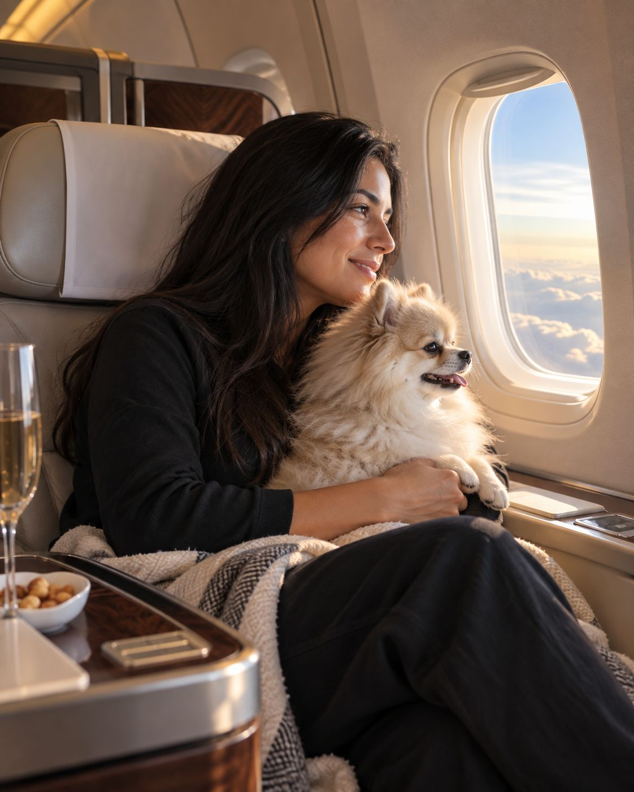
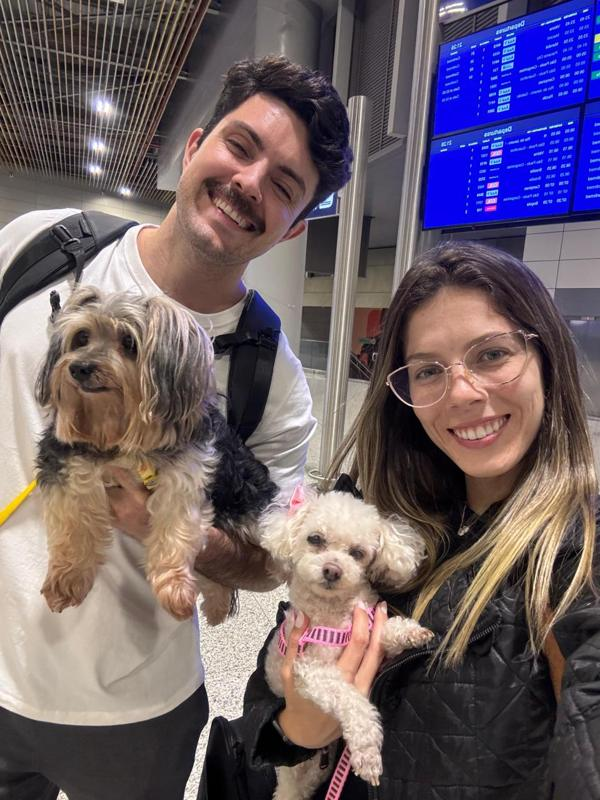
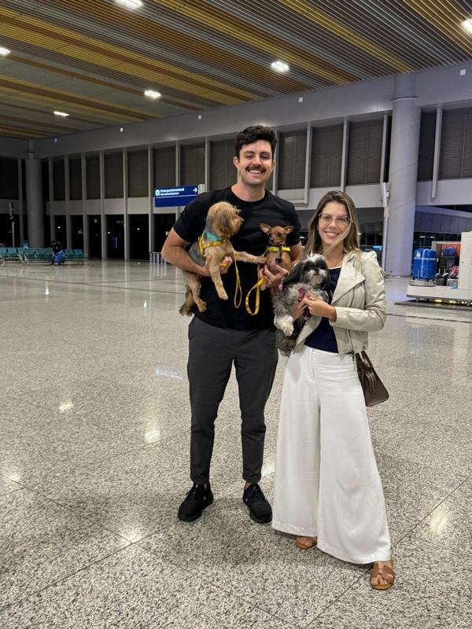
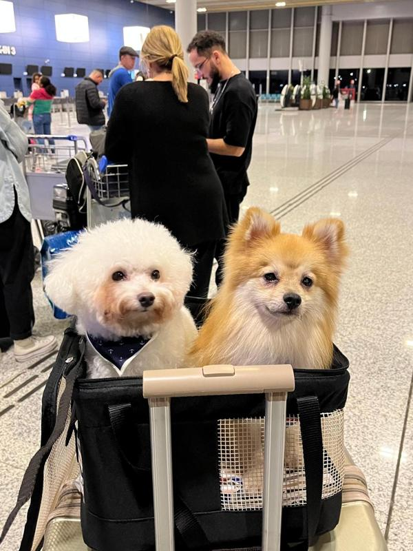
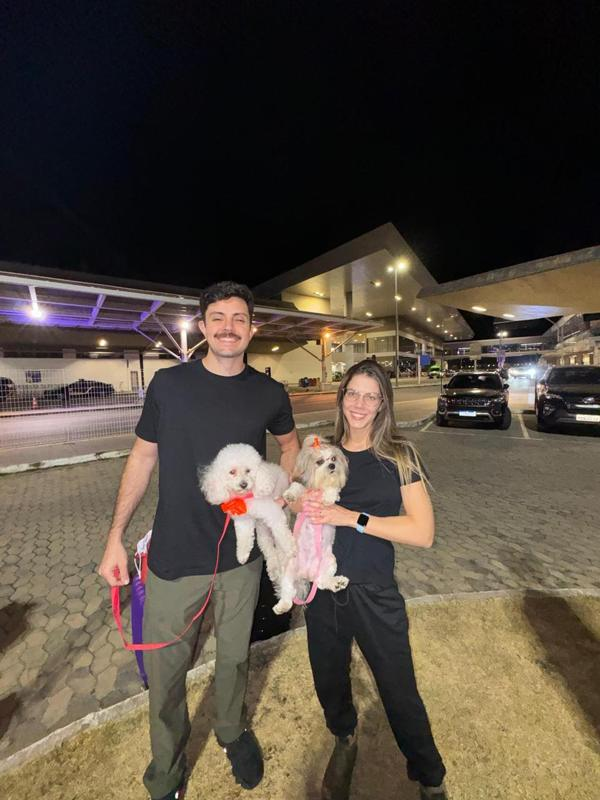

Análise do destino
Entendemos para onde o pet vai, quando será o embarque e quais requisitos precisam ser considerados no planejamento.
Acompanhamento veterinário especializado para preparar a documentação e os requisitos sanitários da viagem internacional do seu pet, de acordo com o destino e os prazos envolvidos. Se você não puder viajar, também levamos seu cão até o destino.

Cada país pode estabelecer exigências sanitárias, documentais e prazos próprios. Por isso, o primeiro passo não é preencher formulários: é entender o destino, a data da viagem e a situação atual do seu pet para organizar corretamente cada etapa.
Entendemos para onde o pet vai, quando será o embarque e quais requisitos precisam ser considerados no planejamento.
Validação das vacinas exigidas, identificação, exames laboratoriais como a sorologia, avaliação clínica e demais procedimentos aplicáveis ao caso.
Orientação para que documentos, atestados e etapas oficiais sejam preparados na sequência e dentro dos prazos adequados.

Na Clivet Quintão, o atendimento para viagens internacionais é acompanhado pelo Dr. Felipe Quintão. Ele avalia a situação do pet, o destino e o cronograma da viagem para orientar as etapas veterinárias e documentais necessárias.
A proposta é tornar um processo que pode parecer burocrático em uma jornada mais clara, organizada e segura para o tutor.
Você informa o país de destino e a previsão da viagem.
Analisamos vacinação, documentos, saúde e requisitos aplicáveis.
Organizamos a sequência de procedimentos, exames e documentos.
Acompanhamos as etapas necessárias antes da data do embarque.




Para tutores que já se mudaram ou que não podem embarcar no momento, a Clivet organiza o envio assistido: um emissário de confiança acompanha o cão presencialmente durante todo o voo até o país de destino.
Alguns processos precisam ser iniciados com antecedência. Quanto antes o destino e a data forem definidos, melhor podemos organizar as próximas etapas.
Não. As exigências variam conforme o destino e podem envolver requisitos sanitários e prazos diferentes.
O ideal é iniciar o planejamento assim que o destino e a data estiverem definidos. Alguns requisitos podem demandar antecedência.
A Clivet realiza o acompanhamento veterinário e a preparação das etapas necessárias. A emissão oficial do certificado segue os procedimentos definidos pelas autoridades responsáveis.
Sim. No serviço de translado, um emissário de confiança acompanha o cão durante todo o voo até o destino. A documentação é preparada pela Clivet antes do embarque.
É preciso avaliar o destino, a data de embarque e a situação atual do pet. Entre em contato para analisarmos o seu caso.
Envie o país de destino e a data prevista da viagem. A partir dessas informações, a equipe da Clivet orienta os próximos passos.